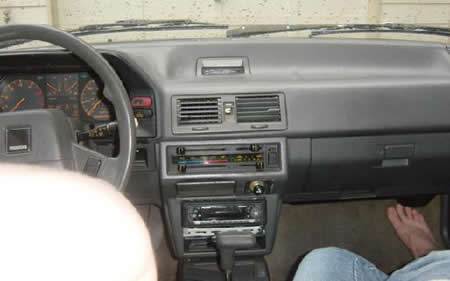
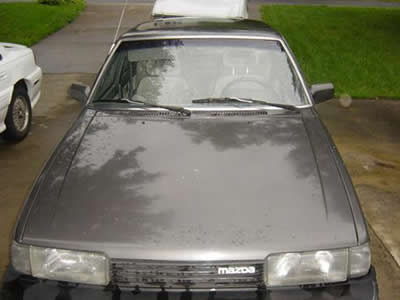
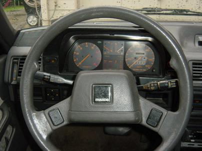

Yes, this is my car. The stories you've heard are true, it really is the beast. Actually, it's gone by many names. The first of which being Mazda. My Mazda, which I recieved from my Dad when I turned 16. My family has had the car since I was a little boy, riding in the back seat. I remember driving someplace in Florida and my parents having to be pulled over because I was rustling around in the backseat without my seatbelt. I also remember when my sister got car sick one time and threw up all over the driver's side back seat. Everytime someone sat back there, I was sure to point that out :-p
My car has gone by many other names as well. The second lesser-known one would be The Bitch. I'm not sure where that came from, but anyways. The best known name for my car is certainly The Shitmobile. I came up with the name my freshman year, sometime while Missy and I were driving around in the West Deck. Certainly not the most orginal of names, I'm sure several people have had their own "Shitmobile" type monstrosities.

I've had a very interesting history with the car. I learned on it when I had my driver's permit, so I've really never had anything else. In those early days, just months after getting my precious driver's license, my Mazda would take me to play rehearsals at McEachern, which I would be just so tickled about having the opportunity to park at school after-school and be able to go out for our rehersal dinner to McDonalds. The prospect of drive-thru fast food was so exciting then...
I soon graduated to menial work. Mazda was absolutly necessary for my almost daily treks to Target, as cars don't run on gas for free. These daily little back-and-forths in my Mazda are probably what was responsible for my love of garbage. I remember timing my trips by the number of songs it took. I believe a ride to Target was typically one Version 2.0 Special Edition Live CD. Yah, I loved pulling into the parking lot listening to "Vow."
Driving around Athens has always been a joy. Luckily for me, since I was usually very pedestrian during my years at UGA, I wasn't in the car too often, which worked out pretty well because the more the drive The Shitmobile, the more problems emerged. I do really consider the times I had with my car in Athens were the best for me. There was this one really horrible week when my computer crashed, the phone in room was broken, my cell phone broke, and I felt like everything in the world was falling apart and I could depend on anything. It was at that moment, while on my way to replace my phone, I turned on the Shitmobile and it worked! Kind of funny...the one thing I could depend on the least was always there for me, always, when I needed it the most.
I soon graduated to menial work. Mazda was absolutly necessary for my almost daily treks to Target, as cars don't run on gas for free. These daily little back-and-forths in my Mazda are probably what was responsible for my love of garbage. I remember timing my trips by the number of songs it took. I believe a ride to Target was typically one Version 2.0 Special Edition Live CD. Yah, I loved pulling into the parking lot listening to "Vow."
Driving around Athens has always been a joy. Luckily for me, since I was usually very pedestrian during my years at UGA, I wasn't in the car too often, which worked out pretty well because the more the drive The Shitmobile, the more problems emerged. I do really consider the times I had with my car in Athens were the best for me. There was this one really horrible week when my computer crashed, the phone in room was broken, my cell phone broke, and I felt like everything in the world was falling apart and I could depend on anything. It was at that moment, while on my way to replace my phone, I turned on the Shitmobile and it worked! Kind of funny...the one thing I could depend on the least was always there for me, always, when I needed it the most.

Of course, on just those random days when I really didn't need the car to leave me stranded on the side of the road, The Shitmobile was really good about keeping me on my toes. I have had MANY problems with the car, believe you me. I've had maybe seven alternators put in the car, finally realizing the alternators that Big 10 Tires kept giving me were duds, so I finally opted for the middle-of-the-road quality Bosch alternator (which I never had a problem with). The alternator issues actually led to the most annoying problem with the car, intermitently charging and overcharging the battery, putting too much charge into the car, causing my CD player to turn itself off to protect it from a short--VERY ANNOYING! I had to slow down just to listen to a car...I couldn't go over 30 miles-per-hour! I replaced the battery twice (most likely because the alternator kept shorting out the batteries). I did major brake work for the car twice, costing me about $1,300. Included in that lofty sum was some muffler work, giving me a nice respite in the obnoxious noises coming from my car, but unfortunatly those problems were followed by exhaust issues. I never successfully fixed the timing belt squealing issues with the car. One of the last problems with the car was some bad spark plugs that had the car turning off randomly while I was driving to school...VERY scary AND stressful (Thank you Mom and Dad for such a lovely car).
Some of the more serious car problems were very costly, both of which I fortunatly didn't pay for. During high school, I wanted to fix the air-conditioner (something that never worked well), and after I got my car back, I didn't realize the mechanic had drained the radiator. My idiocy eventually melted to motor inside my car, forcing my father to have to buy a new one. Three months later the transmission went. We probably should have dumped the car then, but fate would not have it that way.
Some of the more serious car problems were very costly, both of which I fortunatly didn't pay for. During high school, I wanted to fix the air-conditioner (something that never worked well), and after I got my car back, I didn't realize the mechanic had drained the radiator. My idiocy eventually melted to motor inside my car, forcing my father to have to buy a new one. Three months later the transmission went. We probably should have dumped the car then, but fate would not have it that way.

I decided to get rid of my car my Junior Year at UGA. I had had enough, after paying $300 to ensure the car would still run while I was driving it, I refused to pay anything more for it. I pissed and moaned to my parents for a new car, but they wouldn't budge. It seemed I would forever be pigeoned-holed in this automobile from HELL! So I quit. I quit driving it, I stopped driving it home with me. I was convinced that it was no longer safe to take anywhere. I started taking the bus and I even went as far to ride my bike six miles to school to convince both my parents that I had truly had my fill of this car. My mother actually had some respect for my well-being, actually devoting her second job to eventually getting me a car to replace The Shitmobile. My dad on the other hand seemed determined to keep me in the lap of Satan, even going as far to pay to fix the bad wheel on my car so I wouldn't have any reason to doubt the safety of my car. I stuck to my guns, freeing myself of future autocare debt and frustration.

Now-a-days, I'm spending the last few months of my Junior Year without a car. It's been a difficult adjustment. I'm usually taking the bus places. My bike has seen more miles than I think it did before I got my car. I've started to be very critical/jealous of my car driving friends. It's been an interesting transition, but I think I'm a better person because of it. I know that while I was in high school, I always thought I needed my car more than anything. I thought it was the most precious possession in the world. I've learned that it's about the most worthless thing in the world and I'm better off without it. Nothing is precious, except for yourself, those you love, and your good friends. They can take me to the ends of the Earth, no car ever could.
In Blog-related Shitmobile antics, I suggest reading the classic Week of Hell, which is the source of my personal debt, only now after getting rid of the car I find I'm finally getting under control. Also, the most interesting place of all, you should check out my special Ode to the Shitmobile. It's delciously fun!
In Blog-related Shitmobile antics, I suggest reading the classic Week of Hell, which is the source of my personal debt, only now after getting rid of the car I find I'm finally getting under control. Also, the most interesting place of all, you should check out my special Ode to the Shitmobile. It's delciously fun!